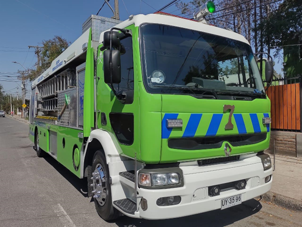
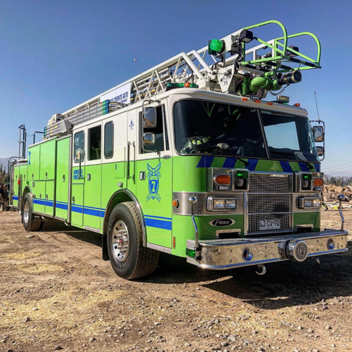

Inicio de la conformación
Orden del Día N.º 102-2012 y designación de los encargados de iniciar el proyecto.
Información institucional, historia y actualidad de la Séptima Compañía del Cuerpo de Bomberos de Puente Alto.
La Séptima Compañía del Cuerpo de Bomberos de Puente Alto fue fundada el 7 de marzo de 2013, en el cuartel ubicado en Elisa Correa N.º 570.
Su conformación se inició a partir de la Orden del Día N.º 102-2012, que encargó a Ernesto Ramírez Serrano y Pablo Fuentes Rojas comenzar el proceso de formación de la nueva unidad.
Desde sus primeros años, la compañía construyó una identidad ligada al trabajo de agua, escalas, acceso y salvamento, formando una unidad preparada para apoyar las operaciones de emergencia del CBPA.
Leer el acta de fundación ↗Orden del Día N.º 102-2012 y designación de los encargados de iniciar el proyecto.
El 7 de marzo se formaliza la nueva compañía en Elisa Correa 570.
La historia pública de la compañía registra la llegada de su primer carro portaescalas, conocido como Q7.
Comienza el período de la Brigada Juvenil, que celebra su primer aniversario en 2026.
La Séptima participa en actividades oficiales del CBPA, incluyendo el desfile comunal de septiembre.
La identidad operacional de Zapadores combina el combate de incendios con capacidades de acceso, escalas y salvamento.
Trabajo de extinción y apoyo a las operaciones de control de incendios, integrándose con las demás compañías del CBPA.
Acceso a altura, despliegue de escalas y apoyo a operaciones de salvamento y entrada a estructuras.
La tradición zapadora se relaciona con abrir paso y generar las condiciones necesarias para el trabajo de las unidades de emergencia.

La documentación histórica disponible registra la llegada del primer carro portaescalas de la compañía en diciembre de 2014, identificado como Q7.
Ver más detalles y fotos →
Unidad principal de portaescalas y salvamento de la Séptima Compañía.
Ver más detalles y fotos →
Unidad escala mecánica para trabajos de acceso a altura y rescate.
Ver más detalles y fotos →.jpg)
Nombre de la oficialidad vigente no publicado aquí sin verificación institucional.
Nombre de la oficialidad vigente no publicado aquí sin verificación institucional.
Ficha preparada para actualización.
Ficha preparada para actualización.
Ficha preparada para actualización.
Ficha preparada para actualización.
Director: Pablo Fuentes Rojas · Capitán: Ernesto Ramírez Serrano · Teniente 1.º: Diego Castro Nazal · Teniente 2.º: Rodrigo Barrios Zuazagoitia · Teniente 3.º: Luis Mejías Mejías.
Sector preparado para integrar llamados desde una fuente institucional o un sistema interno.
Esta sección puede conectarse posteriormente a un sistema interno, API o publicación institucional.
Espacio para prácticas, ejercicios y despliegues de especialidad.
Espacio para visitas, actividades preventivas y participación territorial.
El CBPA participó con sus nueve compañías y la Brigada Juvenil de la Séptima en la actividad comunal de Fiestas Patrias.
Leer noticia ↗El CBPA informó el primer aniversario de la Brigada Juvenil de la Séptima Compañía.
Fuente CBPA ↗El acta del 7 de marzo de 2013 conserva el origen, la primera oficialidad y los fundadores de la compañía.
Ver acta ↗Elisa Correa Sanfuentes 570
Puente Alto, Región Metropolitana.
Una instancia de formación para las nuevas generaciones, activa públicamente al menos desde 2025.
La Séptima forma parte de las compañías que integran el Cuerpo de Bomberos de Puente Alto.